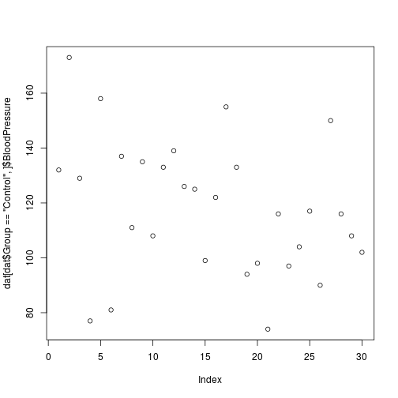

Overview
Teaching: 20 min
Exercises: 0 minQuestions
What are the different methods for accessing parts of a data frame?
Objectives
Understand the three different ways R can address data inside a data frame.
Combine different methods for addressing data with the assignment operator to update subsets of data.
R is a powerful language for data manipulation. There are three main ways for addressing data inside R objects.
Lets start by loading some sample data:
dat <- read.csv(file = 'data/sample.csv', header = TRUE, stringsAsFactors = FALSE)
Interpreting Rows as Headers
The first row of this csv file is a list of column names. We used the header=TRUE argument to
read.csvso that R can interpret the file correctly. We are using the stringsAsFactors=FALSE argument to override the default behaviour for R. Using factors in R is covered in a separate lesson.
Lets take a look at this data.
class(dat)
[1] "data.frame"
R has loaded the contents of the .csv file into a variable called dat which is a data frame.
dim(dat)
[1] 100 9
The data has 100 rows and 9 columns.
head(dat)
ID Gender Group BloodPressure Age Aneurisms_q1 Aneurisms_q2
1 Sub001 m Control 132 16.0 114 140
2 Sub002 m Treatment2 139 17.2 148 209
3 Sub003 m Treatment2 130 19.5 196 251
4 Sub004 f Treatment1 105 15.7 199 140
5 Sub005 m Treatment1 125 19.9 188 120
6 Sub006 M Treatment2 112 14.3 260 266
Aneurisms_q3 Aneurisms_q4
1 202 237
2 248 248
3 122 177
4 233 220
5 222 228
6 320 294
The data is the results of an (not real) experiment, looking at the number of aneurysms that formed in the eyes of patients who undertook 3 different treatments.
Data can be accessed by index. We have already seen how square brackets [ can be used to subset (slice) data. The generic format is dat[row_numbers,column_numbers].
Selecting Values
What will be returned by
dat[1,1]?
dat[1,1]
[1] "Sub001"
If we leave out a dimension R will interpret this as a request for all values in that dimension.
Selecting More Values
What will be returned by
dat[,2]?
The colon : can be used to create a sequence of integers.
6:9
[1] 6 7 8 9
Creates a vector of numbers from 6 to 9.
This can be very useful for addressing data.
Subsetting with Sequences
Use the colon operator to index just the aneurism count data (columns 6 to 9).
Finally we can use the c() (combine) function to address non-sequential rows and columns.
dat[c(1,5,7,9), 1:5]
ID Gender Group BloodPressure Age
1 Sub001 m Control 132 16.0
5 Sub005 m Treatment1 125 19.9
7 Sub007 f Control 173 17.7
9 Sub009 m Treatment2 131 19.4
Returns the first 5 columns for patients in rows 1,5,7 & 9
Subsetting Non-Sequential Data
Return the age and gender values for the first 5 patients.
Columns in an R data frame are named.
names(dat)
[1] "ID" "Gender" "Group" "BloodPressure"
[5] "Age" "Aneurisms_q1" "Aneurisms_q2" "Aneurisms_q3"
[9] "Aneurisms_q4"
Default Names
If names are not specified e.g. using
headers=FALSEin aread.csv()function, R assigns default namesV1,V2,...,Vn
We usually use the $ operator to address a column by name
dat$Gender
[1] "m" "m" "m" "f" "m" "M" "f" "m" "m" "f" "m" "f" "f" "m" "m" "m" "f"
[18] "m" "m" "F" "f" "m" "f" "f" "m" "M" "M" "f" "m" "f" "f" "m" "m" "m"
[35] "m" "f" "f" "m" "M" "m" "f" "m" "m" "m" "f" "f" "M" "M" "m" "m" "m"
[52] "f" "f" "f" "m" "f" "m" "m" "m" "f" "f" "f" "f" "M" "f" "m" "f" "f"
[69] "M" "m" "m" "m" "F" "m" "m" "f" "M" "M" "M" "f" "m" "M" "M" "m" "m"
[86] "f" "f" "f" "m" "m" "f" "m" "F" "f" "m" "m" "F" "m" "M" "M"
Named addressing can also be used in square brackets.
head(dat[,c('Age', 'Gender')])
Age Gender
1 16.0 m
2 17.2 m
3 19.5 m
4 15.7 f
5 19.9 m
6 14.3 M
Best Practice
Best practice is to address columns by name, often you will create or delete columns and the column position will change.
A logical vector contains only the special values TRUE & FALSE.
c(TRUE, TRUE, FALSE, FALSE, TRUE)
[1] TRUE TRUE FALSE FALSE TRUE
Truth and Its Opposite
Note the values
TRUEandFALSEare all capital letters and are not quoted.
Logical vectors can be created using relational operators e.g. <, >, ==, !=, %in%.
x <- c(1, 2, 3, 11, 12, 13)
x < 10
[1] TRUE TRUE TRUE FALSE FALSE FALSE
x %in% 1:10
[1] TRUE TRUE TRUE FALSE FALSE FALSE
We can use logical vectors to select data from a data frame.
index <- dat$Group == 'Control'
dat[index,]$BloodPressure
[1] 132 173 129 77 158 81 137 111 135 108 133 139 126 125 99 122 155
[18] 133 94 98 74 116 97 104 117 90 150 116 108 102
Often this operation is written as one line of code:
plot(dat[dat$Group == 'Control',]$BloodPressure)

Using Logical Indexes
- Create a scatterplot showing BloodPressure for subjects not in the control group.
- How many ways are there to index this set of subjects?
The assignment operator <- can be combined with indexing.
x <- c(1, 2, 3, 11, 12, 13)
x[x < 10] <- 0
x
[1] 0 0 0 11 12 13
Updating a Subset of Values
In this dataset, values for Gender have been recorded as both uppercase
M, Fand lowercasem,f. Combine the indexing and assignment operations to convert all values to lowercase.
Key Points
Data in data frames can be addressed by index (slicing), by logical vector, or by name (columns only).
Use the
$operator to address a column by name.